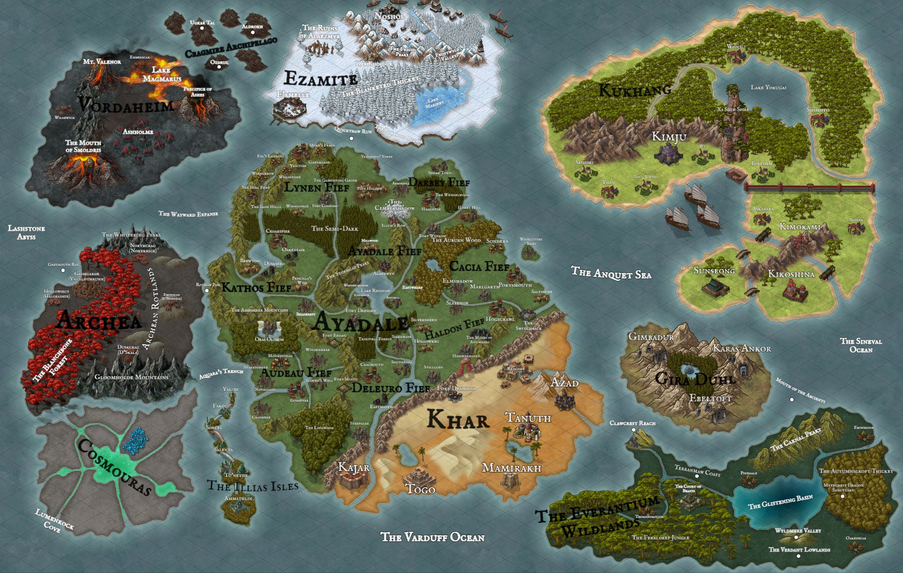

THE KNOWN WORLD
GEOGRAPHICAL RECORD
Drag to explore • Select a marker to learn more
Geography • Territories • Settlements
A record of the lands, territories, and places that comprise the known world.

Drag to explore • Select a marker to learn more